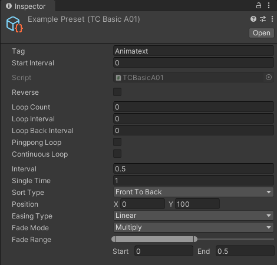

Preset
Category
Unit
Based on the units used, there are five preset categories: character, word, line, group and range.
characterPreset executed in visible characters.
wordPreset executed in words that are divided by word breaks. Word breaks include spaces(U+0020), no-break spaces(U+00A0), line feeds(U+000A), ideographic spaces(U+3000).
linePreset executed in lines that are divided by line breaks. Line breaks include line feeds(U+000A).
groupPreset executed in groups that are defined by using group tags.
rangePreset executed with the tag range as one unit.
Type
Presets can be divided into 3 types: transition, coherence and other.
transitionPresets of text transition effects.
coherencePresets of continuous and coherent text effects.
otherOther presets.
Effect
Based on their effects, there are eight preset categories: basic ,elastic, bounce, back, wave, fade, step, custom.
Parameter
tagThe tag name of the preset.
start intervalThe waiting time before executing the preset.
reversePreset execution in reverse.
-
sort typeThe order of unit execution, taking 0,1,2,3,4,5,6,7,8 as an example.
Front To Back0,1,2,3,4,5,6,7,8 - Back To Front8,7,6,5,4,3,2,1,0
Front to Middle0,1,2,3,8,7,6,5,4 - Middle To Front4,5,6,7,8,3,2,1,0
Back To Middle8,7,6,5,0,1,2,3,4 - Middle To Back4,3,2,1,0,5,6,7,8
Middle To Sides Front4,3,5,2,6,1,7,0,8 - Middle To Sides Back4,5,3,6,2,7,1,8,0
Sides To Middle Front0,8,1,7,2,6,3,5,4 - Sides To Middle Back8,0,7,1,6,2,5,3,4
intervalThe interval between every two units.
anchor typeThe anchor type of the unit anchor.
anchor offsetThe offset of the unit anchor.
easing typeThe easing type of the preset.
Loop
loop countHow many times the preset loops itself. It means infinite loop when it's value is less than or equal 0.
loop intervalThe interval between every two consecutive loops.
loop back intervalThe loop interval to execute the next loop.
pingpong loopWhether to execute the loop in a back-and-forth manner.
continuous loopWhether the unit loops continuously. "Yes" means the unit will loop continuously. "No" means the unit will wait for all other units to finish before starting its next loop.
Transition
fade modeThe color blend mode of fade.
fade rangeThe progress range of fade.
Coherence
continuous easingWhether the easing is continuous. "Yes" means the easing value is from 0 to 1 and then from 1 to 0. "No" means the easing value is from 0 to 1 and then from -1 to 0.
Elastic
oscillationsThe number of full oscillations.
stiffnessThe oscillation stiffness. The higher stiffness means the oscillation will reduce in intensity faster.
Bounce
bouncesThe number of bounces.
bouncinessThe degree of each bounce.
Back
amplitudeThe amplitude of back.
Wave
wavesThe number of waves.
Step
stepsintThe number of steps.
stepTypeStepTypeThe calculation method of the step easing.